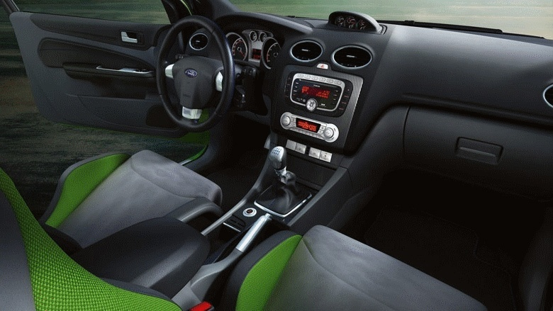

При эксплуатации автомобиля со временем его наружные пластиковые детали (зеркала, молдинги, бамперы и т. п.) выгорают и выцветают, становясь матовыми. И из-за этого «страдает» весь внешний вид автомобиля. Каким же образом можно исправить данную ситуацию и вернуть наружному пластику его первоначальный вид? Услуга «Чернение пластиковых деталей кузова» — вот что вам необходимо! После данной процедуры все пластиковые детали вашего автомобиля приобретут обновленный вид и глубокий черный цвет, а при наличии мелких царапин они станут практически незаметными. При этом чернение стойко к различным внешним воздействиям, защищает пластик от агрессивных сред и выгорания, не оставляют разводов и пятен и держится достаточно продолжительно время.
Наномойка Антидождь Инновационный автошампунь Полировка «Жидкое стекло»